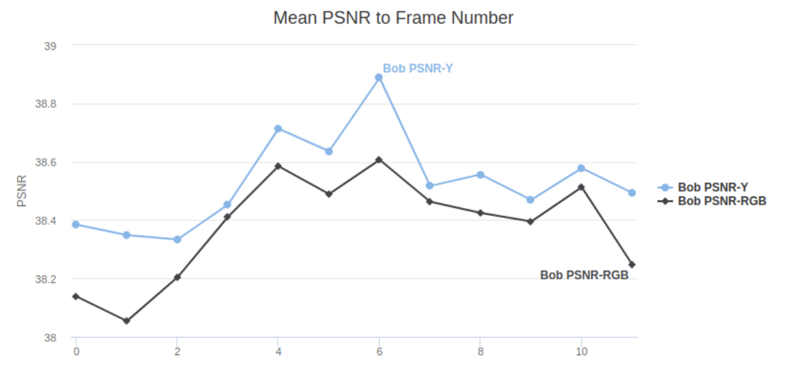
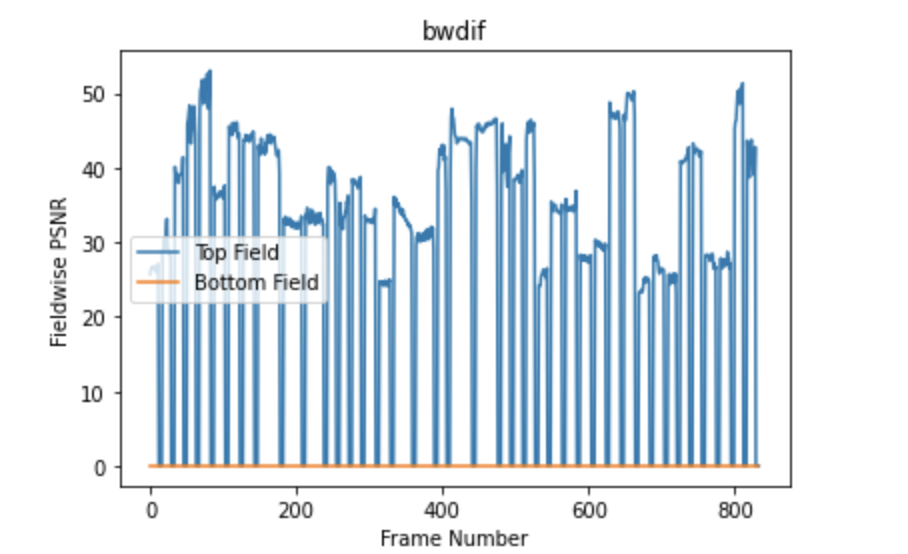

Our dataset is constantly updated. Now we have 28 video sequences. Each sequence contains 60 frames. Resolution of all video sequences is 1920x1080. FPS varies from 24 to 60. TFF interlacing was used to get interlaced data from GT.
We compare RGB frames via 3 metrics - PSNR, SSIM, and VMAF. PSNR, SSIM, and VMAF are measured over the Y-component.
For each video sequence, we take the average PSNR, SSIM, and VMAF over all frames. We decided to choose these metrics because they proved themselves to be among the best metrics to show a quality loss.
We decided to measure these metrics over the Y component because YUV is the most popular type of colorspace nowadays, but there are still a lot of versions of YUV (e.g. yuv444p, yuv420p, yuv420p12le). In these versions U and V components are different, that's why we measure only the Y component. Also, there are a lot of other color spaces, which use the Y component (e.g. YCbCr, YPbPr, UYVY, ...). Finally, we can easily compute the Y component from other color spaces, such as RGB or gray.
Here is the plot of the PSNR difference between PSNR-Y and PSNR-RGB. As we can see here, the difference is rather negligible.
Also, we provide MOS (Mean Opinion Score) for the best 16 deinterlacers (excluding different versions of the same deinterlacer).
To get MOS, we host a subjective comparison using www.subjectify.us. We get the same crops (of areas with the worst PSNR) from each test video, and then assessors compare output of each deinterlacer against all others. We get 10 comparison results for each crop-crop pair, and then we use Bradley-Terry model to get MOS scores
Another important direction of our work is to control the outputs of deinterlacers. Sometimes, it can convert colorspace, work in BFF mode instead of TFF, or maybe have bugs.
The main criteria are that the PSNR between GT fields and the same fields in the deinterlaced video must be equal to infinity. To control this, we make Top-Fields and Bottom-Fields plot on every second frame of GT video and deinterlaced video.
Here is the sample plot for Bob-Weave Deinterlacer. This deinterlacer passed the validation.
PSNR between Bottom-Fields of every deinterlaced frame and GT frame is equal to infinity, so we substitute infinity by zero. This means, that the bottom field exactly matches the corresponding field in the GT sequence.
Another sample plot, for MSU Deinterlacer, which had problems with colorspace.
As we can see here, Bottom-Field PSNR is about 100, but not infinity. In such cases, we make the following steps:
Also, we provide MSU Video Quality Measurement Tool (VQMT) PSNR visualization of the deinterlacer output. As the last step of the validation process, we check, that the VQMT PSNR visualization is striped. It should be so because even/odds rows must exactly match the corresponding GT rows.
Here is the example of correct VQMT PSNR visualization output:
And, finally, let us take a closer look at it:
As we can see, the output is stripped, so this means that the deinterlacer passed the last validation step.